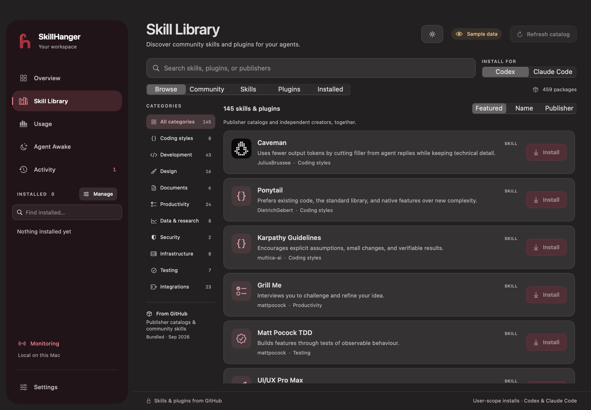
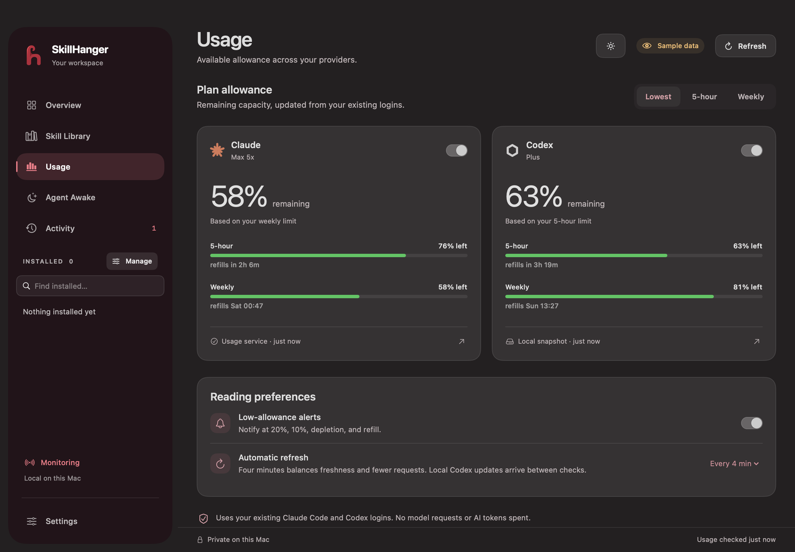
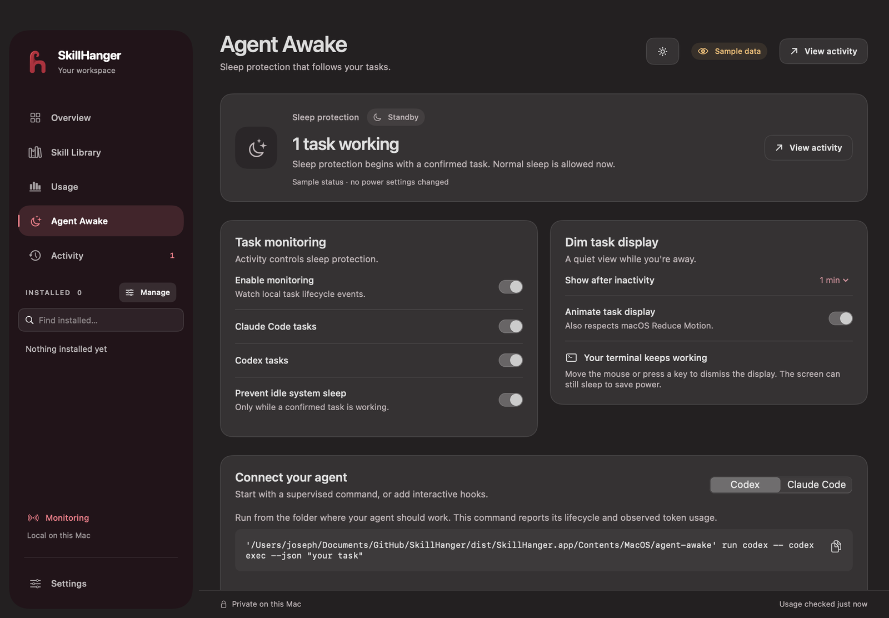
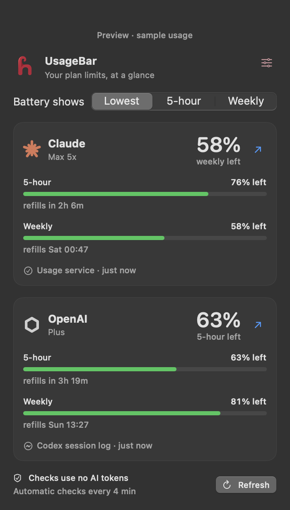

01 · Skill Library
Discover skills & plugins.
Search a library of GitHub packages for coding, design, testing, documents and more. Review the publisher and source, then install for Codex or Claude Code.

SkillHanger · Free for Mac · MIT
Find better tools for your AI. See your limits. Keep work running. A free, open-source native Mac app for people who work with Claude Code and Codex.
Skills · Usage · Agent Awake
Coding with an AI assistant means more than writing prompts. You need useful tools, enough allowance to finish, and a Mac that stays awake while a long task runs.
01 · Skill Library
Search a library of GitHub packages for coding, design, testing, documents and more. Review the publisher and source, then install for Codex or Claude Code.

SEE
YOUR
LIMITS.
Session and weekly limits, reset times, and how fresh each reading is. Two small batteries sit on your desktop and in the menu bar.

03 · Agent Awake
Prevent idle sleep while a monitored task runs. When tasks wait or finish, normal sleep comes back. Follow working, waiting, finished and interrupted sessions.

Tour · Preview mode · Sample data
UsageBar · Menu bar · Desktop
Two small batteries show how much allowance you have left, on your desktop and in the menu bar. Click one for a compact popup with session and weekly limits and their reset times.

Agent Awake · Command-line helper
Run a task through the bundled agent-awake helper, and your Mac stays out of idle sleep until the task completes, fails, or is cancelled. Your terminal sees the same input and output as before. Interactive sessions use provider hooks instead.
/Applications/SkillHanger.app/Contents/MacOS/agent-awake run claude -- claude -p --output-format json "your task"Turn on Prevent idle sleep during tasks in Agent Awake. Closing a laptop lid isn't the same as idle sleep. That needs an optional helper, which you install and enable yourself. See the closed-lid guide.
Install · macOS 13+ · Free
Grab the latest SkillHanger-0.2.0.zip from Releases.
Move SkillHanger into your Applications folder.
It isn't notarized yet, so the first time: right-click → Open → Open.
$ git clone https://github.com/icarus2419/SkillHanger.git
$ cd SkillHanger
$ make app
$ open dist/SkillHanger.appSign in to Claude Code, or to Codex with a ChatGPT account, to see your plan limits. SkillHanger reads the login your assistant already stored, so you never paste an API key into it.
Privacy · Permissions